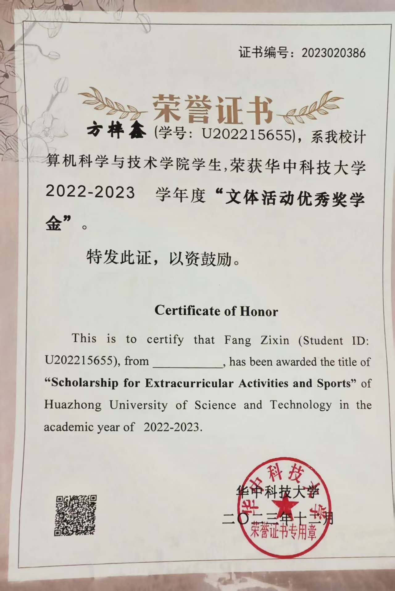
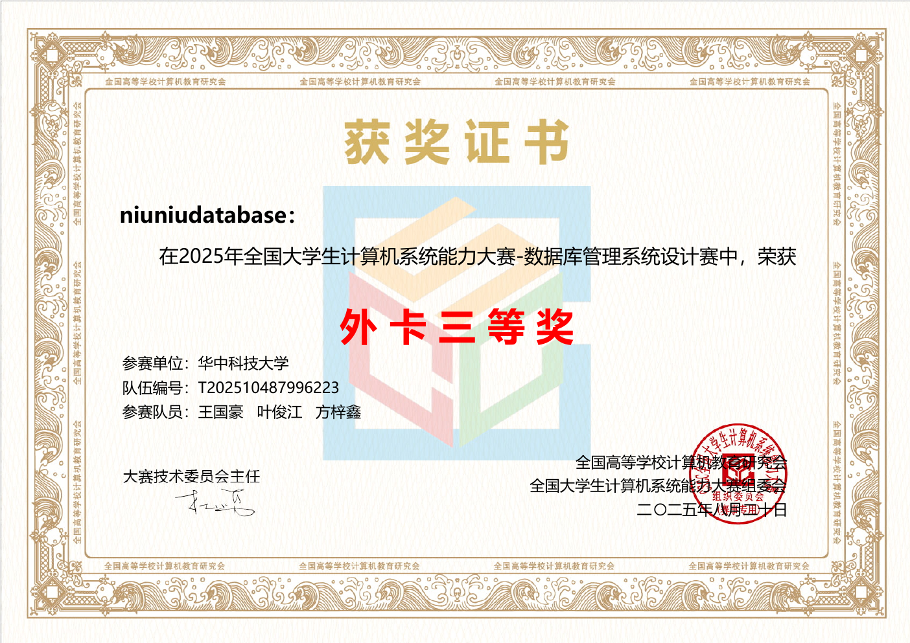

032022—2023  VIEW CERTIFICATE ↗ 文体活动优秀奖学金Scholarship for Extracurricular Activities and Sports
042025 · COMPETITION  VIEW CERTIFICATE ↗ 数据库系统设计赛 · 外卡三等奖National Undergraduate Computer System Capability CompetitionOPEN ORIGINAL PDF ↗